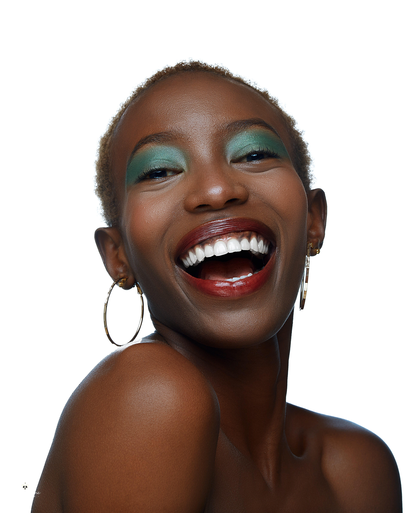

Malia, La mode une vie est un film dramatique de mode racontant l'histoire d'une jeune femmme passionée par la mode, qui aspire à de devenir mannequin. Cependant, sa mère, convaincue que seul un parcours académique peut lui assurer un avenir stable, insiste pour qu'elle poursuive des études de droit. Tiraillée entre son ambition et les attentes familiales, Malia doit affronter les obstacles sociaux et personnels pour trouver sa voie. entre désilusions, sacrifices et moments d'espoir, son parcours illustre le combat de nombreuses jeunes femmes qui aspirent à une carrière artistique dans un environnemnt où la réussite est souvent définie par des chemins plus traditionnels
Le 06 decembre 2024, la salle de cinéma Climax a été le théatre d'un événement marquant avec la projéction en avant-première du film Malia, la mode une vie. Ce moment a réuni un large éventail de personnalités issues de divers horizons: professionels de la mode, entrepreneurs, artistes et cinéphiles passionés... Tous ont eu l'opportunité de découvrir ce film tant attendu, avant de participer à un panel enrichissant sur l'entrepreneuriat dans le domaine de la mode dans notre millieu, un sujet qui a suscité de vifs échanges et réflexions. Les discussions lors du panel ont permis de mieux comprendre les enjeux et les défis de l'industrie de la mode dans notre region, tout en mettant en lumière les opportunités qui s'offrent à ceux qui souhaitent y investir. La sortie officielle de Malia, la mode une vie est imminente. Restez connectés pour figurer parmi les premiers à le découvrir !